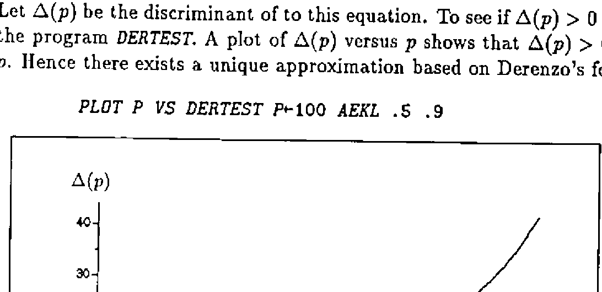

Implementing Cardano’s Rule
Vector 8:4, page 43
Transcribed from the printed issue; not yet reviewed. Read it in the PDF of the issue, page 43
A cubic equation with derived forms¶
Let us be given the equation
Ax3 + Bx2 + Cx + D = 0, A ≠ 0.
Dividing by A leads to its normal form
x3 + ax2 + bx + c = 0,
where
a = B/A, b = C/A, c = D/A.
Substituting x = y − a/3 finally renders the reduced form
y3 + py + q = 0
where
p = b − a2/3
and
q = c + (2a3 − 9ab)/27.
Cardano’s rule¶
Define the discriminant by
Δ = (q/2)2 + (p/3)3.
Further let
u = ∛(−q/2 + √Δ)
and
v = ∛(−q/2 − √Δ).
Depending on the sign of Δ Cardano’s rule distinguishes three cases to solve the reduced form, [1].
-
Δ < 0 (casus irreducibilis): The three real solutions are
y1 = 2√(|p|/3) cos(φ/3)
y2 = −2√(|p|/3) cos((φ − π)/3)
y3 = −2√(|p|/3) cos((φ + π)/3)where
φ = arccos( (−q/2) / √((|p|/3)3) )
-
Δ = 0: There are three real solutions, two of them being identical. They are given by
y1 = u + v
y2,3 = −(u + v)/2 -
Δ > 0: There is one real solution and two complex ones. They are given by
y1 = u + v
y2 = −(u + v)/2 + (√3/2)(u − v)i
y3 = −(u + v)/2 − (√3/2)(u − v)i
The program CARDANO can be used to get the solutions of any cubic equation.
Approximating Φ−1(p)¶
Let Φ be the distribution function of a standard normal distribution, i.e.
Φ(z) = ∫−∞z (1/√(2π)) e−t²/2 dt.
Recently, Derenzo [2] and Lin [3] considered approximations to Φ(z). Derenzo established the approximation
Φ(z) ≈ ½e−pD(−z) for z ≤ 0; 1 − ½e−pD(z) for z > 0
where
pD(t) = (83t3 + 351t2 + 562t) / (165t + 703),
see also [4].
Lin’s method amounts to
Φ(z) ≈ ½e−pL(−z) for z ≤ 0; 1 − ½e−pL(z) for z > 0
with
pL(t) = 0.717t + 0.416t2.
Its advantage is the fact that a simple formula is available to approximate zp with Φ(zp) = p. It is given by
zp ≈ (−0.717 + √(0.514089 + 1.644a(p))) / 0.832 = zpL
where a(p) = −ln(2(1 − p)).
Inverting Derenzo’s formula is not so obvious, since for p > 0.5 we have to solve
83x3 + 351x2 + (562 − 165a(p))x − 703a(p) = 0.
Let Δ(p) be the discriminant of to this equation. To see if Δ(p) > 0 we used the program DERTEST. A plot of Δ(p) versus p shows that Δ(p) > 0 for all p. Hence there exists a unique approximation based on Derenzo’s formula.

The program IDERENZO computes the approximation zpD for a vector of values p ∈ (0,1).
Although inserting Derenzo’s values in Cardano’s rule leads to a very clumsy formula its implementation is straightforward and yields excellent results as can be seen by comparing it to Lin’s method. The following table corresponds to that in [3] although values p greater than .9995 have been taken into account. It reveals the fact that the absolute relative error rz of the new approximation is never greater than 0.34% for all values of p.
| p | zp | zpD | zpL | rzD (%) | rzL (%) |
|---|---|---|---|---|---|
| 0.500000 | 0.000000 | 0.000000 | 0.000000 | 0.000000 | 0.000000 |
| 0.600000 | 0.253347 | 0.253261 | 0.269179 | 0.033907 | 6.249075 |
| 0.700000 | 0.524401 | 0.524515 | 0.542005 | 0.021740 | 3.357063 |
| 0.800000 | 0.841621 | 0.841877 | 0.854404 | 0.030447 | 1.518867 |
| 0.900000 | 1.281552 | 1.281774 | 1.285662 | 0.017374 | 0.320770 |
| 0.950000 | 1.644854 | 1.644962 | 1.643760 | 0.006618 | 0.066510 |
| 0.975000 | 1.959964 | 1.959978 | 1.956721 | 0.000701 | 0.165453 |
| 0.990000 | 2.326348 | 2.326287 | 2.323588 | 0.002614 | 0.118620 |
| 0.995000 | 2.575829 | 2.575744 | 2.575194 | 0.003311 | 0.024658 |
| 0.997500 | 2.807034 | 2.806943 | 2.809597 | 0.003233 | 0.091325 |
| 0.999500 | 3.290527 | 3.290463 | 3.303295 | 0.001931 | 0.388044 |
| 0.999750 | 3.480756 | 3.480712 | 3.498733 | 0.001275 | 0.516455 |
| 0.999900 | 3.719016 | 3.718998 | 3.744378 | 0.000496 | 0.681953 |
| 0.999950 | 3.890592 | 3.890592 | 3.921829 | 0.000010 | 0.802889 |
| 0.999975 | 4.055627 | 4.055642 | 4.092928 | 0.000374 | 0.919743 |
| 0.999995 | 4.417173 | 4.417211 | 4.469071 | 0.000858 | 1.174914 |
References¶
[1] Bartsch, H.J. (1971) Mathematische Formeln, Buch- und Zeit-Verlagsgesellschaft mbH, Köln.
[2] Derenzo, S.E. (1977) Approximations for Hand Calculators Using Small Integer Coefficients, Mathematics of Computation 31, 214-225.
[3] Lin, Jinn-Tyan (1989) Approximating the Normal Probability and its Inverse for Use on a Pocket Calculator, Appl. Statist. 38, 69-70.
[4] Velleman, P.F and Hoaglin, D.C. (1981) Applications, Basics, and Computing of Exploratory Data Analysis, Duxbury Press, Boston.
Appendix: The Programs¶
∇Δ←DERTEST p;AP;A;B;C;D;P;Q;a;b;c;Δ
[1] AP←-⍟2×1-p
[2] A←83 ⋄ B←351 ⋄ C←562-165×AP ⋄ D←¯703×AP
[3] a←B÷A ⋄ b←C÷A ⋄ c←D÷A
[4] P←b-a×a÷3 ⋄ Q←c+(÷27)×(2×a*3)-9×a×b
[5] Δ←((Q÷2)*2)+(P÷3)*3
∇
∇R←IDERENZO p;a;b;c;p;q;D;u;v;A
[1] A←-⍟2×1-p
[2] a←351÷83 ⋄ b←(562-165×A)÷83 ⋄ c←¯703×A÷83
[3] p←b-(a×a)÷3
[4] q←c+((2×a*3)-9×a×b)÷27
[5] D←(0.25×q×q)+(p÷3)*3
[6] u←(×u)×(|u←(¯0.5×q)+D*0.5)*÷3
[7] v←(×-v)×(|v←(0.5×q)+D*0.5)*÷3
[8] R←u+v-a÷3
∇
∇R←CARDANO ABCD;a;b;c;p;q;D;u;v;f
[1] a←ABCD[2]÷ABCD[1]
[2] b←ABCD[3]÷ABCD[1]
[3] c←ABCD[4]÷ABCD[1]
[4] p←b-(a×a)÷3
[5] q←c+((2×a*3)-9×a×b)÷27
[6] a←-a÷3
[7] →( ¯1 0 1=×D←(0.25×q×q)+(p÷3)*3)/DS0,DE0,DG0
[8] DS0:'Three real solutions:'
[9] R←2○f←(¯2○(¯0.5×q)×((|p÷3)*3)*¯0.5)÷3
[10] R←a+(2×(|p÷3)*0.5)×R,-2○f+ ¯1 1 ×○÷3
[11] →0
[12] DE0:'Three real solutions (two identical):'
[13] R←a+(-u+u),R,R←u←(0.5×q)*÷3
[14] →0
[15] DG0:'Two conjugate complex and one real solution:'
[16] u←(×u)×(|u←(¯0.5×q)+D*0.5)*÷3
[17] v←(×-v)×(|v←(0.5×q)+D*0.5)*÷3
[18] R←u+v+a
[19] (⍕a-0.5×u+v),' + ',(⍕(0.5×3*0.5)×u-v),'i'
[20] (⍕a-0.5×u+v),' - ',(⍕(0.5×3*0.5)×u-v),'i'
∇